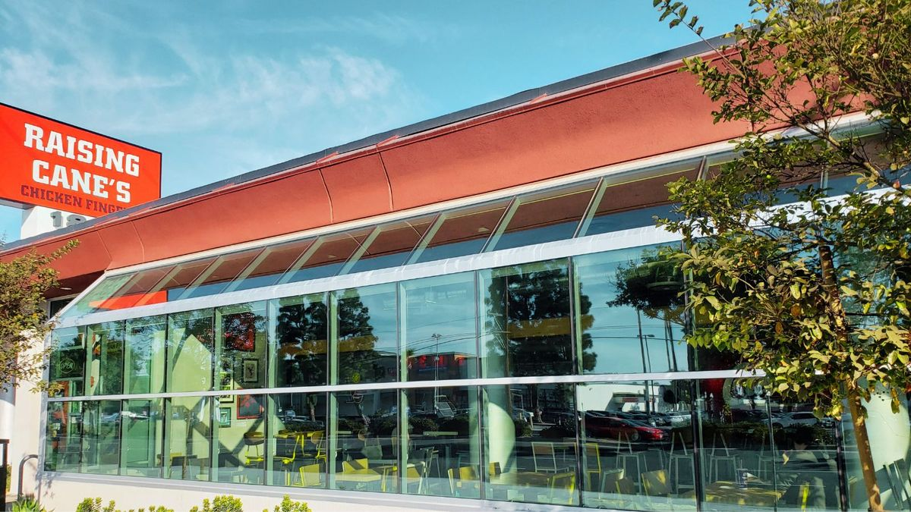

A Property Manager's Guide to Building Exterior Maintenance in LA

If you manage multi-unit residential buildings, HOA communities, or commercial properties in Los Angeles, exterior maintenance is one of those things that's easy to defer — until it becomes a problem. Tenants complain about dirty windows. The HOA board starts asking why the common areas look neglected. A prospective tenant tours the building and notices the grimy walkways. By the time it's visible, you're already behind.
We work with property managers across LA — from condo buildings in Santa Monica and Beverly Hills to apartment complexes in Sherman Oaks and commercial plazas in Culver City. Here's what we've learned about keeping buildings looking sharp without blowing the maintenance budget.
Build a maintenance calendar, not a reactive cycle
The most effective property managers we work with don't wait for complaints. They build exterior maintenance into their annual calendar and budget for it upfront. This approach is cheaper in the long run because regular cleaning prevents the kind of deep-set grime and staining that requires more expensive remediation.
Here's a practical annual schedule for most LA multi-unit buildings:
- January – February: Post-rain gutter check and cleaning. Winter storms deposit leaves and debris; clearing gutters now prevents overflow and water damage during late-season rains.
- March – April: Full exterior window cleaning (all units, common areas, lobby glass). Spring is ideal — you're clearing winter buildup before the dry, dusty months hit.
- May – June: Pressure wash walkways, garage entries, and common-area hardscape. This is when everything starts looking dusty, and summer heat bakes grime into surfaces if you don't address it.
- July – August: Mid-year window cleaning for buildings that do biannual service. High-visibility buildings should consider this essential.
- September – October: Pre-holiday pressure washing and window cleaning. If your building hosts open houses or holiday events, this is the time to get everything looking its best.
- November – December: Fall gutter cleaning before the rainy season. Clear debris from deciduous trees and ensure drainage is ready for winter storms.
Windows: the highest-visibility maintenance item
Dirty windows are the number one aesthetic complaint from tenants and condo owners. They're also the most visible sign of building maintenance (or lack thereof) to anyone approaching the property. For property managers, window cleaning is the single most impactful exterior service you can schedule.
For most residential buildings in LA, we recommend a minimum of twice-annual exterior window cleaning. Buildings near the coast (Venice, Santa Monica, Marina del Rey, Manhattan Beach) should go quarterly because salt spray accelerates buildup significantly. Commercial buildings with ground-floor retail should have those storefront windows cleaned weekly or biweekly — the ground level is what people see up close.
A common question we get from property managers: do you handle individual unit interiors? Yes. We can coordinate with residents to schedule interior cleaning alongside the exterior work. Some buildings offer this as an opt-in amenity — residents sign up if they want interiors done while the crew is already on-site. It's a nice perk that tenants appreciate and costs the building nothing additional to coordinate.
Pressure washing: protecting the asset
Pressure washing isn't cosmetic — it's protective. Organic growth (mold, mildew, algae) and mineral deposits (hard water stains, efflorescence) actively degrade concrete, stucco, and painted surfaces over time. Regular pressure washing extends the life of these materials and pushes major repair costs further into the future.
For LA buildings, the areas that need the most attention are parking garage entries (oil stains, tire marks, exhaust residue), walkways and common areas (foot traffic, food spills, pet waste), pool decks and courtyards (algae, calcium deposits), and building facades, particularly stucco, which absorbs dirt and develops dark streaks over time.
We adjust pressure and technique for each surface type — high PSI for concrete driveways, low pressure with specialized detergents for painted stucco and wood. This matters because improper pressure washing can damage surfaces, which defeats the purpose. If your current vendor uses the same pressure on everything, that's a red flag.
Gutters: the invisible maintenance item
Gutters don't generate complaints until they fail — and when they fail, the damage is expensive. Overflowing gutters cause water intrusion into walls, foundation damage, landscape erosion, and exterior staining that requires professional remediation. For multi-story buildings, a clogged gutter can send water cascading down the facade, creating visible stains and potentially damaging lower-floor units.
LA gets most of its rain between November and March, but it can come in intense bursts. A single storm can overwhelm a clogged gutter system and cause thousands of dollars in damage. The preventive cost of twice-annual gutter cleaning is a fraction of the remediation cost.
Working with your HOA board
If you manage HOA properties, you know that board approval for maintenance spending can be a process. Here's how to frame exterior maintenance in terms boards respond to:
- Property value preservation: Regular maintenance protects the asset. Deferred maintenance reduces property values and increases long-term costs.
- Tenant retention: Well-maintained buildings have lower vacancy rates. The cost of a vacancy (lost rent, turnover costs, marketing) far exceeds the cost of regular exterior maintenance.
- Liability reduction: Slippery walkways, overflowing gutters, and poorly maintained common areas create liability exposure. Regular maintenance reduces this risk.
- Competitive positioning: In a competitive rental market, building appearance is a differentiator. Prospective tenants tour multiple properties — the one that looks clean and well-maintained gets the lease signed.
What to look for in a vendor
Not all exterior maintenance companies are set up to handle multi-unit and commercial work. Here's what matters for property managers specifically:
- Insurance and licensing. This is non-negotiable. Your vendor should carry general liability and workers' comp. Ask for certificates.
- Crew consistency. You want the same crew on your building every time. They learn the property's quirks, know which areas need extra attention, and build rapport with residents.
- Scheduling flexibility. Multi-unit buildings often need early morning or weekend service to minimize disruption. Your vendor should accommodate this without surcharges.
- Flat-rate pricing. Per-visit pricing that doesn't change based on crew size or hours on site. You need predictable costs for budgeting.
- Single point of contact. One person you can call or text who manages the relationship and handles scheduling, access, and any issues.
We built Trip's Windows to work the way property managers need. Flat rates, consistent crews, flexible scheduling, and a single point of contact for everything. We currently manage recurring service for multi-unit buildings and commercial properties across 29 LA neighborhoods.
Let's build your maintenance plan
If you manage properties anywhere in our service area and want to get exterior maintenance on a proper schedule, reach out for a free estimate. We'll tour your property, assess what it needs, and put together a flat-rate annual plan that covers windows, pressure washing, and gutters — with the flexibility to adjust as your needs change.
Your buildings deserve to look their best. Your tenants notice. Your board notices. And prospective tenants definitely notice.